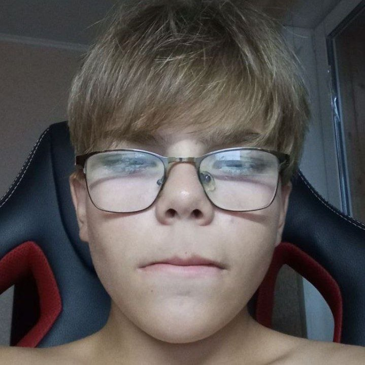
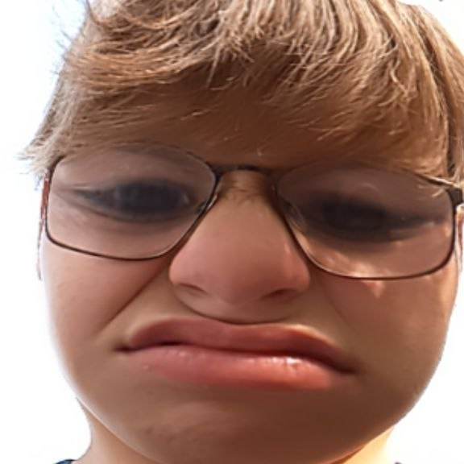
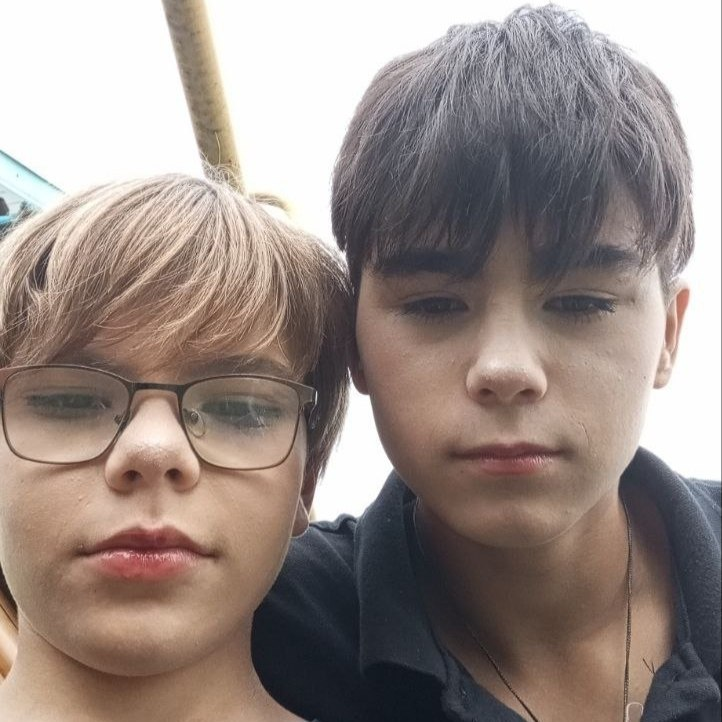
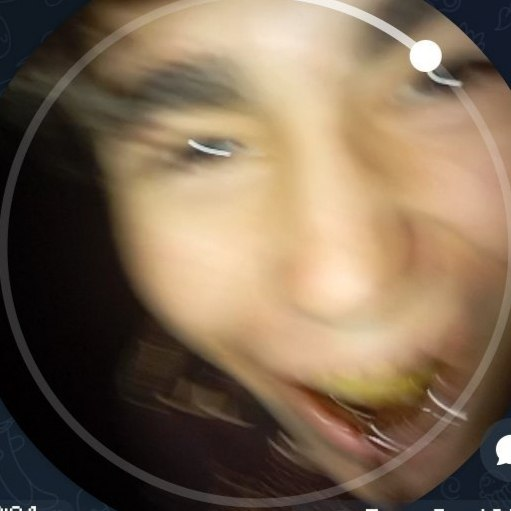
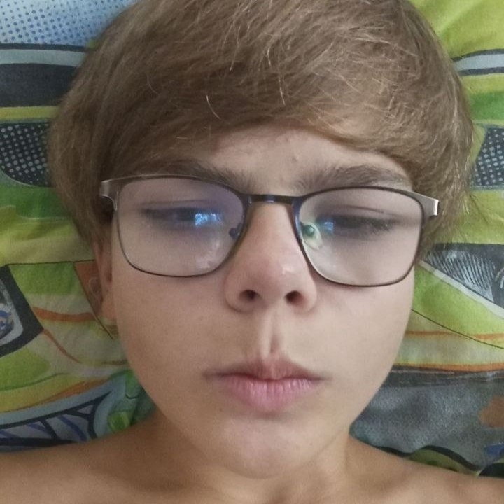
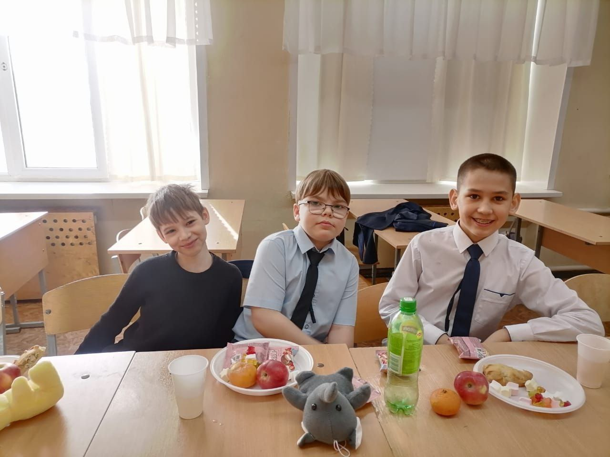

Троицко-Урайские вести
Событие в Троицком Урае
Тема Гусигенг и его первый стрим
Артем хочет стать популярным стримером на Twitch и YouTube. Он начал свой путь с первого стрима под ником Tema_Guccigang.
Обновление лука после успешного стрима
После стрима Артем отправился в магазин одежды, чтобы обновить свой образ на деньги донатов от первых зрителей.

Артема заметили с Арсением в «Рыбке»
Артем был замечен с корреспондентом Гришей в Рыбке. По слухам, Арсений искал девушку, следуя странному поверью о поцелуе голубя, хотя для этого нужна была лягушка.

Скандал Артем замешан в драке
Представители «Florik-project СМИ» обнаружили в соцсетях Артема фотографии, на которых видно потрёпанное лицо Артема. Сам Артем никак не прокомментировал ситуацию.
Артем наносит визит кумиру
Артем посетил известного корреспондента Гришу Диприка. По словам Гриши, Артем предложил взять друг у друга интервью дома. Гриша согласился на встречу.

Эмоциональное выступление в прямом эфире
Во время совместного стрима на Twitch, YouTube и «F-P СМИ» Артем встал на стул и начал откровенно рассказывать о своей жизни.

Успех Гриша и Артем получают крупный донат
Во время совместного стрима Грише и Артему задонатили 50 000 рублей. Эмоции от неожиданного подарка попали в кадр.
Блокировка Артема забанили на Twitch и YouTube
Стримерская карьера Артема столкнулась с проблемами: его аккаунты были заблокированы на обеих основных платформах.

Реакция Гриши на блокировку Артема
Гриша, находившийся на стриме Артема, стал свидетелем блокировки. Он записывал реакцию в свой ТГ-канал и не сдержал эмоции смеха.
Артем обиделся на реакцию Гриши
Увидев в ТГ-канале Гриши его реакцию на свой бан, Артем почувствовал себя преданным и расстроился из-за поведения друга.

Новый этап Артем начинает заниматься собой
Артем опубликовал в соцсетях загадочное фото с конфетами "Raffaello" и подписью: «Вы в жизни не угадаете, куда я собрался 🤭», намекая на перемены в жизни.

Личная жизнь: Артем и его девушка
Артем выложил в соцсети фото, на котором целуется со своей девушкой из Дагестана.

Переезд Артем начинает новую жизнь в Дагестане
Ради отношений Артем переехал в Дагестан. В соцсетях он заявил, что хочет остаться здесь навсегда и «стать дагестанцем».
Скандальный опыт Артем пробует кодеин
Артем шокировал подписчиков, рассказав, что впервые попробовал кодеин. Он утверждал, что сделал это по рецепту врача, хотя данный препарат запрещен в РФ.

Неожиданный поворот Артем баллотируется в главы Дагестана
Как новая медийная личность региона, Артем был приглашен для участия в выборах главы Дагестана и дал свое согласие.
Триумф Реакция Артема на победу в выборах
Узнав, что стал главой Дагестана, Артем немедленно начал записывать восторженное видеообращение для своего ТГ-канала.